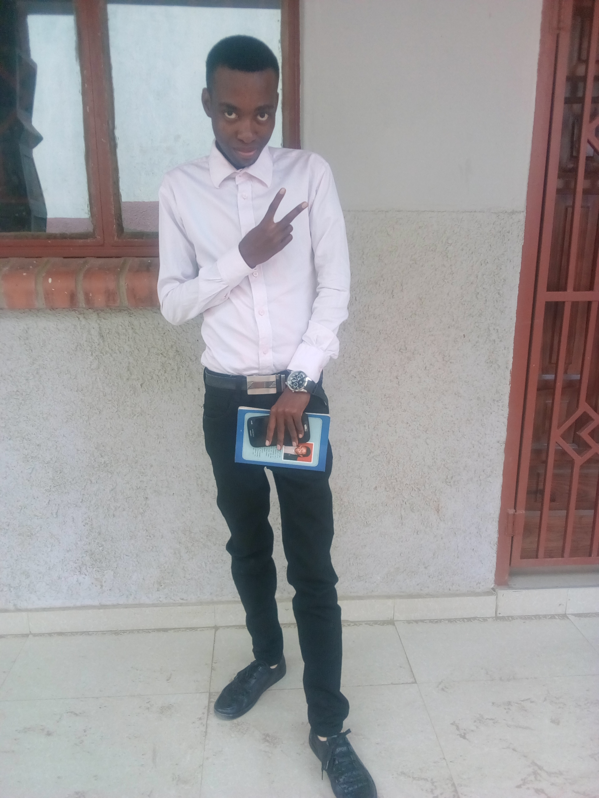
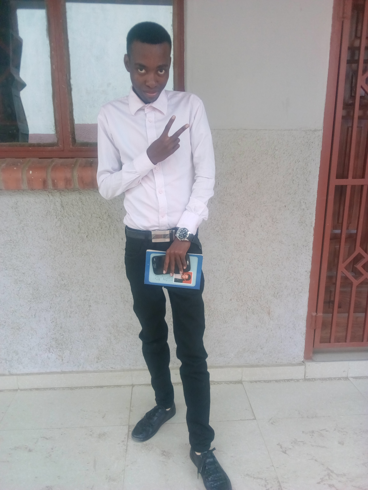

All Robert Zulu
The best Programer in Lusaka,Zambia
Robet Zulu is a boy who was born in Ndola, Zambia on 15/June.
Born in Family of 3 children,my Mother was Justina Zulu and my father is Robertson Zulu.
My young sister is Christine chanda Zulu and my big brother is Arnold Zulu.
Robert Zulu started school in 2000/january. I then went to chinika basic shcool in 2004.
In 2007 I went to kanyama basic school. Where I did my Grade 8 and 9.
In 2009 I went back to Chinika secondary school in Grade 10 to Grade 12.
In 2011 I completed my secondary level.In 2012 I Got a SOCHOOL CERTIFICATE.
In 2016 I went to NATIONAL INSTITUTE OF PUBLIC ADMINISTRATION (NIPA)
I did a Course in INFORMATION SYSTEMS AND PROGRAMMING.In
2017 I was Awarded with a Certificate IN INFORMATION SYSTEMS AND PROGRAMMING.
MY LIFE ACHIEVEMENTS
SOCHOOL CERTIFICATE
CERTIFICATE IN INFORMATION SYSTEMS AND PROGRAMMING
DIPLOMA IN INFORMATION SYSTEMS AND PROGRAMMING
Robert Zulu's Pictures


 

MY FIRST WEBSITE APPLICATION
This is my first web application coded by me Robert Zulu.The things that inspired me to start creating website applications it is because I love Technology so much.Robert loves Computers since Grade 10, that time Computers they where very expensive but I had one older model.After my Grade 12,I started to learn how to Format the Operating System then I Gained experience in Formating Computers.After gaining experience I had a Passion to study Computer Science but something went wrong my Father did not have money for that course. So I perceived a course at NIPA college in Information Systems and Programming. After starting college I gained experience in solving problems for any Computer and I was Good with that job.Later I started practicing how to code application in Microsoft Visual Studio,then I had a passion in Coding Website Application. And this is my first WEBSITE in Microsoft Visual Studio Website Application and now am here as an experienced front end website developer.
MY LIFE GOALS
My Goal in life is to achieve my Ph.D. in Computer Science and I want the World to know Me this is the programmer from Lusaka, Kanyama Zambia.
Top countrys world programmers
- India
- China
- America
The Good things about Programming
- programming open up your mind to the world
- you can create your own applications when you known programming
- programming can make you to be knowing to the world